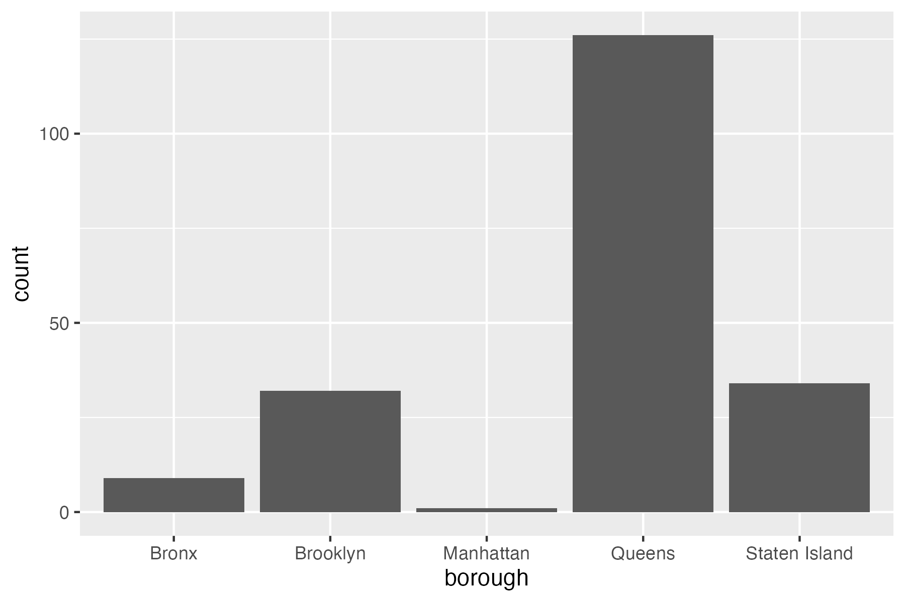
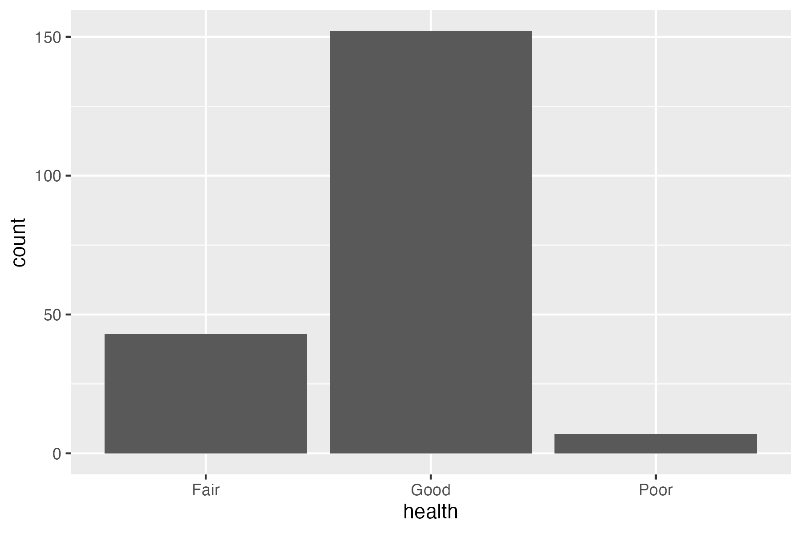
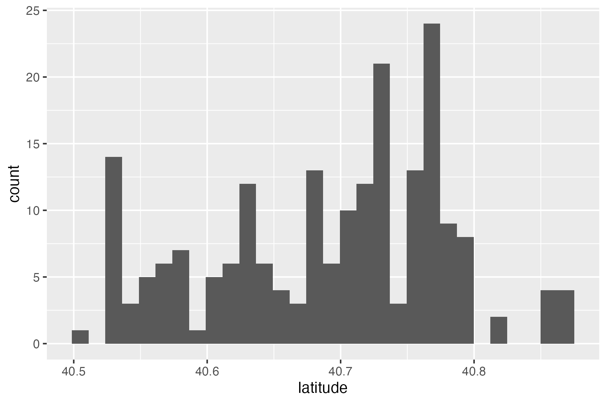
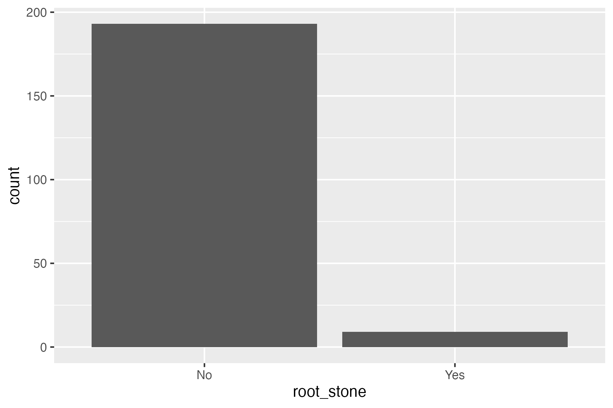
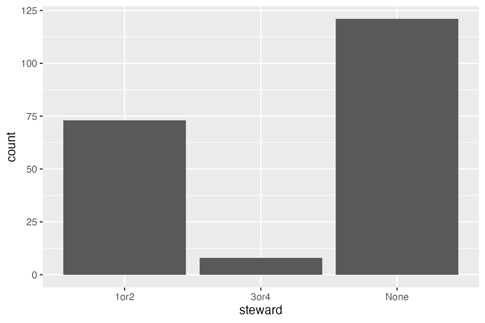
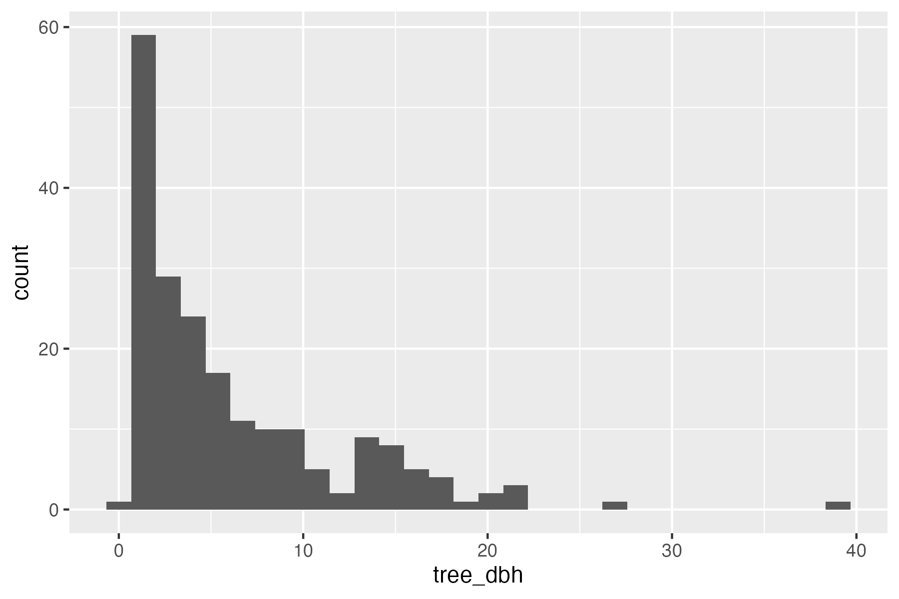
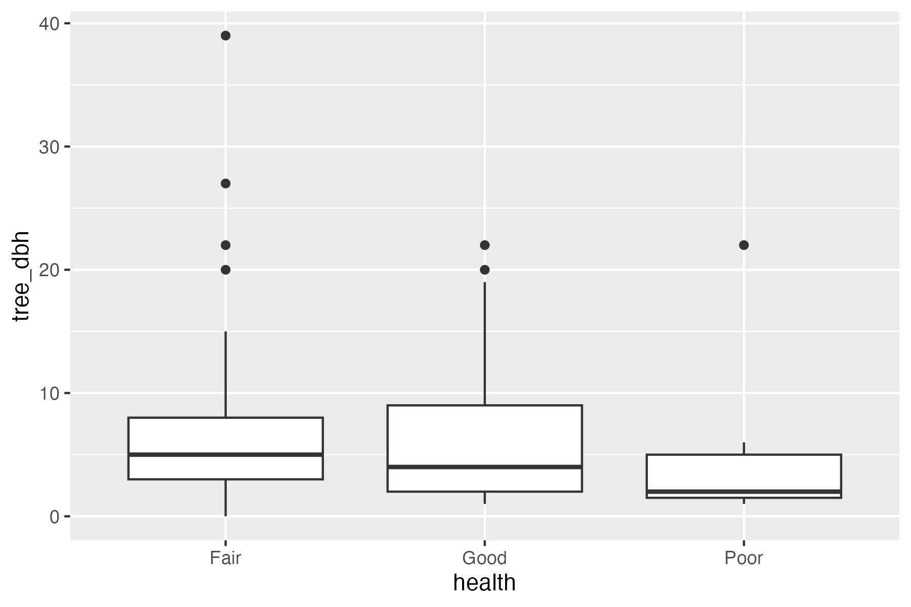
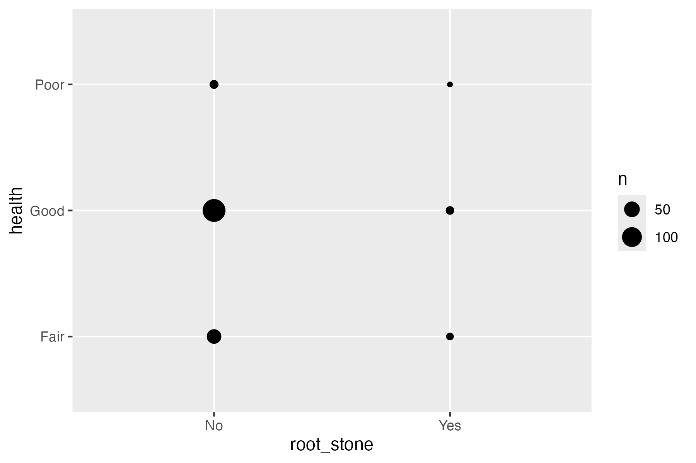
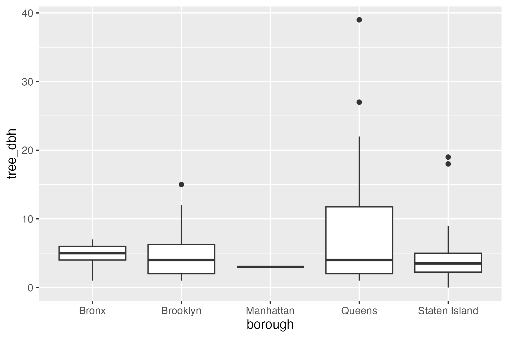

Summary Visualizations






Several important biases and limitations are present in the dataset. First, much of the data was collected by volunteers rather than trained arborists, introducing possible inconsistencies in species identification and health assessment. NYC Parks reported that volunteers achieved high accuracy overall, but subjective measures such as “good,” “fair,” or “poor” tree health remain open to interpretation.
Hypotheses

hypothesis: Trees with poor health tend to have a smaller diameter

hypothesis: Trees with Good health tend to not have root stone

hypothesis: Manhattan has skinny trees